基础页面开发
「基础页面开发」的能力可以定义为：
依据设计稿（PSD 或 Sketch）及交互要求，利用 JavaScript、HTML 和 CSS 等技术将设计稿高保真转换为网页的能力。
该能力是前端开发工程师的立业之本，自然也是「H5 开发」最最基础的要求。然而虽然是最基础的能力要求，平时我们却会发现身边的前端同学对它掌握十分到位的却是为数不多，要知道「做出一个页面」和「做好一个页面」是两码事。
当然，偏脚本开发方向的前端开发工程师可能不会要求精通「基础页面开发」，但至少也需要了解一个网页的基础构成，熟悉 HTML、CSS 在网页开发中各自所承担的角色及其相应用处。
除了熟练使用 JavaScript、HTML 和 CSS 等基础的网页技术，「基础页面开发」另一个非常重要的技能是「切图」，不会「切图」意味着我们无法将设计稿中的图层元素转换成为网页中所需要的图片，将设计稿高保真转换成为网页也就成了天方夜谭。
接下来通过一个案例说明「基础页面开发」是如何涵盖「切图、HTML 和 CSS」这些技能点的，JavaScript 在本小节不是核心故不做阐述。
通常我们会从视觉设计师手中拿到 PSD 设计稿，然后根据设计稿及设计师提供的相关视觉规范说明，一步步将其还原成真实网页。
例如这样一个 PC 站点的设计稿案例（点击放大图片，首屏的 MM 是不是很赞(✿◡‿◡)）：
我们分 5 个步骤来完成这个案例设计稿的页面开发。
步骤1 - 设计稿审查
看到帅锅美驴，不要急着瞪眼流口水，拿到一个设计稿，也不要急于动手。
我们需要站在开发者的角度，先做一个初步的设计稿审查，其目的及意义主要有两个：
了解设计稿的开发友好性
帮助视觉设计师发现并指出有哪些地方的设计对开发不友好，例如是否存在展示缺陷（缺乏经验的视觉设计师一个常见的问题是没有考虑按钮或标签文字数量的溢出情况）？是否开发成本高或者根本无法实现？
了解设计稿的排版布局及内容构成
帮助自己全局理解页面的设计细节，特别是排版布局及内容构成。利用模块化的思想将设计稿解构成一个个组件，并明确每一个组件的可复用性，包括可复用的范围。
这里着重说下第 2 点，为了更快更直观地帮助自己「了解设计稿的排版布局及内容构成」，可以先将网页的排版布局及内容构成抽象成线框图。
我们上面的设计稿案例可大体上抽象成（点击放大图片）：
跨页面可复用组件
参考上述的设计稿线框图，我们可以提取出如下的「跨页面可复用组件」：
- Header - 顶部导航
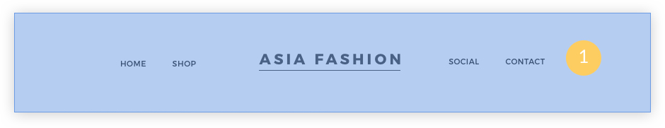
- Footer - 底部信息
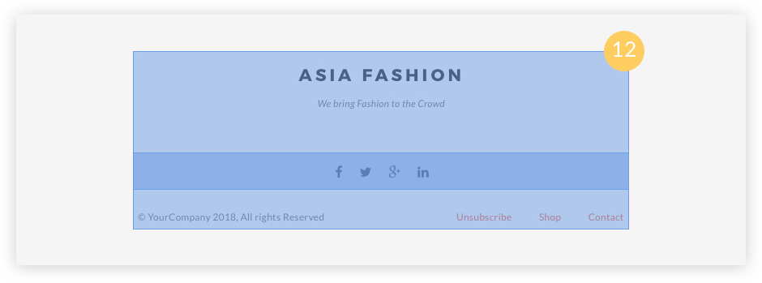
当前页面可复用组件
除去跨页面可复用的组件，剩余的区域，我们可以进一步抽出当前页面可复用的组件，以减少后续重复性的开发工作。
参考上述的设计稿线框图，我们可以提取出如下「当前页面可复用组件」：
- Billboard - 信息公告牌
- Ad-board - 商品广告位
设计稿审查的过程中，如何将内容模块按照合适的颗粒度抽离成为组件，并确定其可复用性及复用范围？这是需要在日常工作中逐步培养的能力。
事实上，设计稿的审查流程一般都比较固定，我们可以将其整理成为团队内通用的审查清单：
- 确定设计稿的开发友好性（是否有还原成本高或无法还原的地方）
- 确定一些特殊的元素是否有合理的边界处理（如文案超出外层容器的边界怎么办）
- 确定页面的框架结构（Layout）
- 确定跨页面可复用的组件（Site Component）
- 确定当前页面可复用的组件（Page Component）
- ...
步骤2 - 编写页面骨骼框架
设计稿审查完毕后我们就可以着手准备进行页面编码的工作啦。
我们可以把页面想象成一套房子，HTML 可以决定网页的框架结构（房子有几间房，各个区域的用途是什么），CSS 可以决定网页的样式（房子该如何装修，房间具体的尺寸是多少），而 JavaScript 则可以决定网页的具体交互和功能的实现（门如何打开，空调如何启动）。
在正式编写页面骨骼框架之前，我们需要了解以下几个重要的网页开发概念。
盒模型
HTML 文档中的每个元素都可以被描绘成矩形盒子，这些矩形盒子通过一个模型来描述其占用的空间，这个模型称为标准盒模型。盒模型通过四个边界来呈现元素的大小：margin（外边距）、border（边框）、padding（内边距）、content（内容区域），如下图所示：
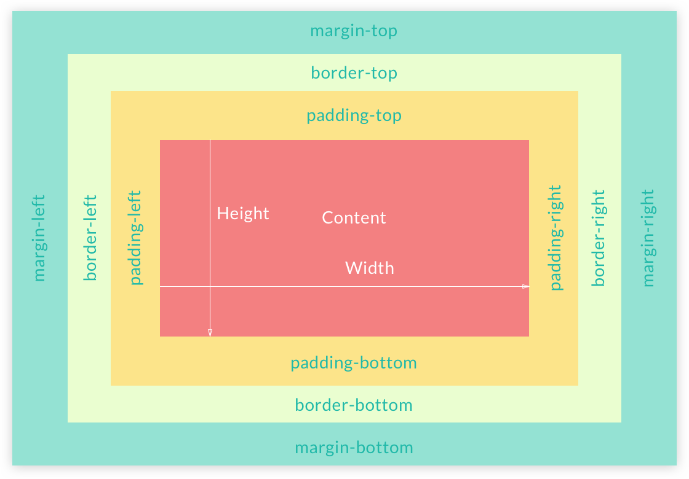
那么计算一个盒子的宽高，是不是可以用以下公式呢？
盒子总宽度 = width + padding + border + margin
No~ 在 IE 浏览器下，IE 没有使用标准盒模型。它们认为的元素宽度 width 计算公式如下：
元素宽度 = width + padding + border
盒子总宽度 = 元素宽度 + margin
为了解决这个问题，CSS3 中新增了一个盒模型的计算方式：box-sizing
box-sizing: content-box | padding-box | border-box;
默认值：content-box
为了简单地规避元素盒模型大小可变性造成的网页排版问题，一般我们会在样式重置的规则中，将盒模型设置成 border-box，添加如下规则：
*, *:before, *:after {
-webkit-box-sizing: border-box;
-moz-box-sizing: border-box;
box-sizing: border-box;
}
设置成 border-box 之后的盒子宽度计算公式如下：
盒子总宽度 = width
不管 margin + border + padding + content-width 大于还是小于元素宽度 width，盒子的总宽度始终固定为 width。
以案例中的广告位模块为例，当盒模型设置成 border-box 之后：
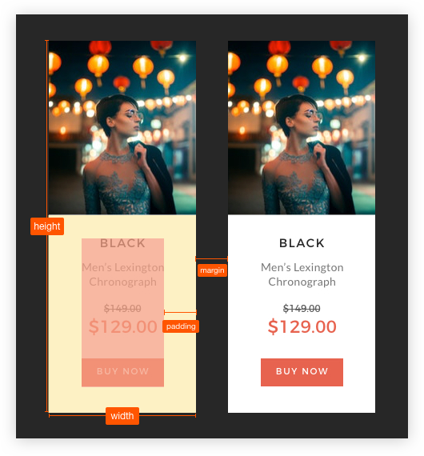
布局
我们可以把网页理解成是由一个个盒子排列组合而成的，那么盒子之间又是怎么排列布局的呢？
网页常见的布局方式大概有五种：普通文档流布局、浮动布局（Float）、绝对布局（Absolute）、弹性布局（Flex）、网格布局（Grid）。
普通文档流布局
默认的布局方式，由块级元素（
display: block）和行内元素（display: inline）等组成，元素之间按照从左到右，从上到下的顺序排列。浮动布局
相对于普通文档流布局，浮动布局会脱离普通文档流，分为左右浮动，一般会在普通文档流布局的上面进行界面的布局，如果想避免浮动布局遮盖普通布局的情况，可以考虑使用清除浮动。
绝对布局
元素使用
position: absolute属性进行绝对布局，使用绝对布局的元素会脱离文档流，其定位是参考祖先元素中position为非static值的第一个元素。弹性布局
也称 Flex 布局，是一个完整的模块，而不是一个单一属性，其中有的属性是设置在父元素上，有些则是设置在子元素上。如果我们说传统的布局是建立在块级元素和行内元素的文本流上，那么 Flex 布局就是建立在
flex-flow的轴方向上的。网格布局
是用于制定行与列的二维 CSS 布局方法，可以将页面分割成数个主要的区域，或者用来定义组件内部元素间的大小、位置和图层之间的关系。
以上是常用的五种网页布局方法，在实际项目中，我们应该根据场景选择适当的方法。
语义化
HTML 的标签虽然不多，但在编写的过程中，也会时不时犹豫应该使用 div 还是 p 标签，是使用 span 还是 i 标签？不管使用哪个标签，大体上都能实现想要的效果。
HTML 语义化就是根据具体的内容，选择合适的标签进行代码的编写，这样既能便于开发者阅读和维护，也能让搜索引擎的爬虫更好地识别。简单的说，就是可以让机器更容易读懂网页内容。
如果用语义化的标签编写网页结构，可以写成如下结构：
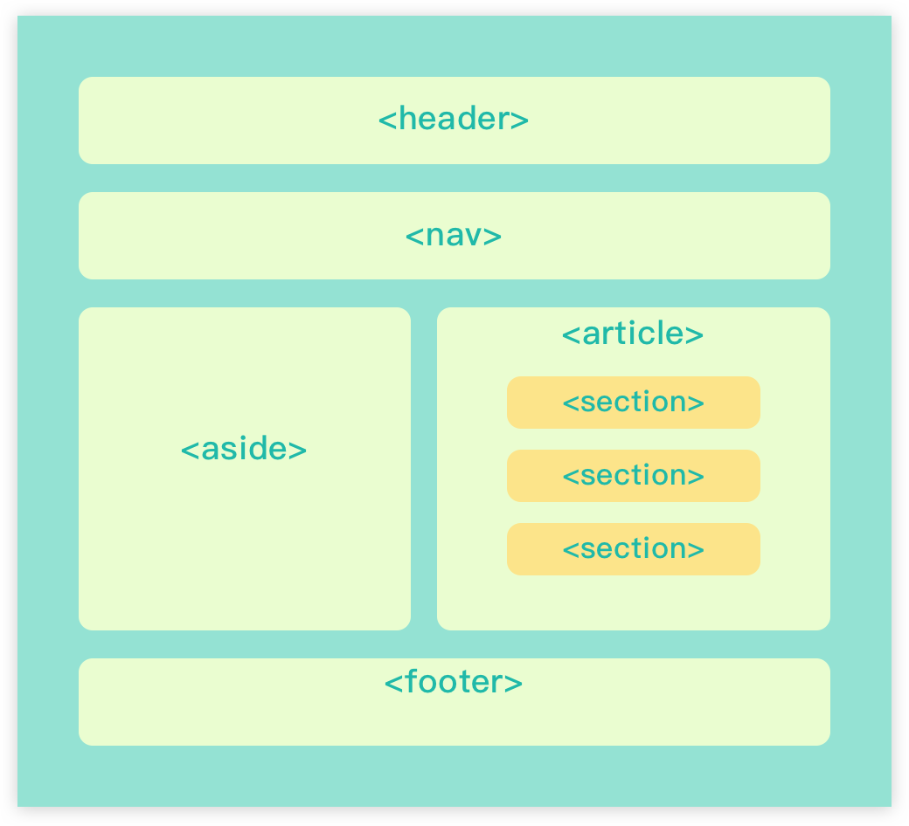
步骤3 - 填充网页血肉内容
HTML 结构确定之后，我们需要进一步往页面中填充设计稿的内容，于是「切图」便成为我们「H5 开发」的必备技能。每个人都有自己熟悉的一套切图流程，但你是否考虑过更优、更高效的切图技巧呢？
Photoshop 更新迭代至今，Adobe 已为我们切图提供了几种便利的方法，下面会一一介绍，也欢迎大家在留言区交流其他的切图方法。
方法1 - Extract Assets 资源生成器
Extract Assets 是 Photoshop CC 2014 版本新增的一个特性，主要用来快速导出适用于 Web 和屏幕设计的资源，你可以用它导出 JPG、PNG、GIF，甚至是 SVG 图像资源。
通过 Extract Assets，你可以：
- 将 PSD 中的图层或图层组导出为一个或多个的图像资源
- 导出 JPG、PNG、GIF 或 SVG 类型的图像资源
- 为所有图像资源设置 1x、2x 等多分辨率的版本
- 预览每个图像资源
- 轻松将图像资源导出到你首选的文件夹中
- 确保每当 PSD 发生变化时，被导出的资源都能得到自动更新
使用方法
按照以下步骤启用 Extract Assets 生成图像资源。
- 启用
Extract Assets
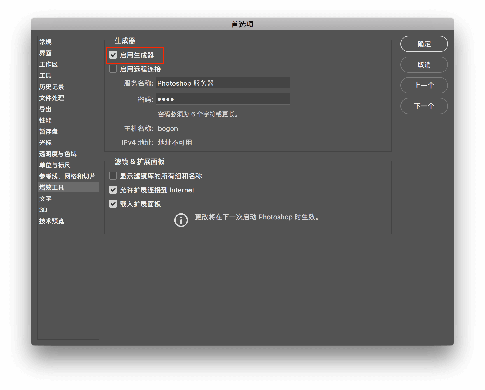
- 打开 PSD 文件后，选择「文件」 > 「生成」 > 「图像资源」
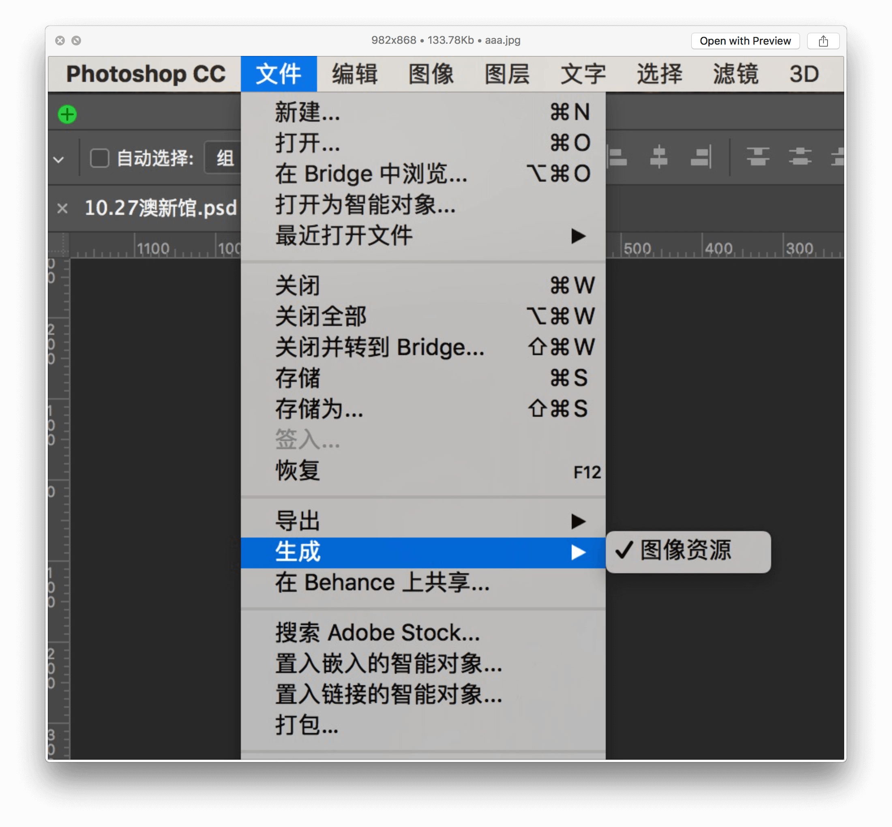
- 更改图层或图层组的名字为适当的文件格式扩展名（.jpg、.png 或 .gif 等）
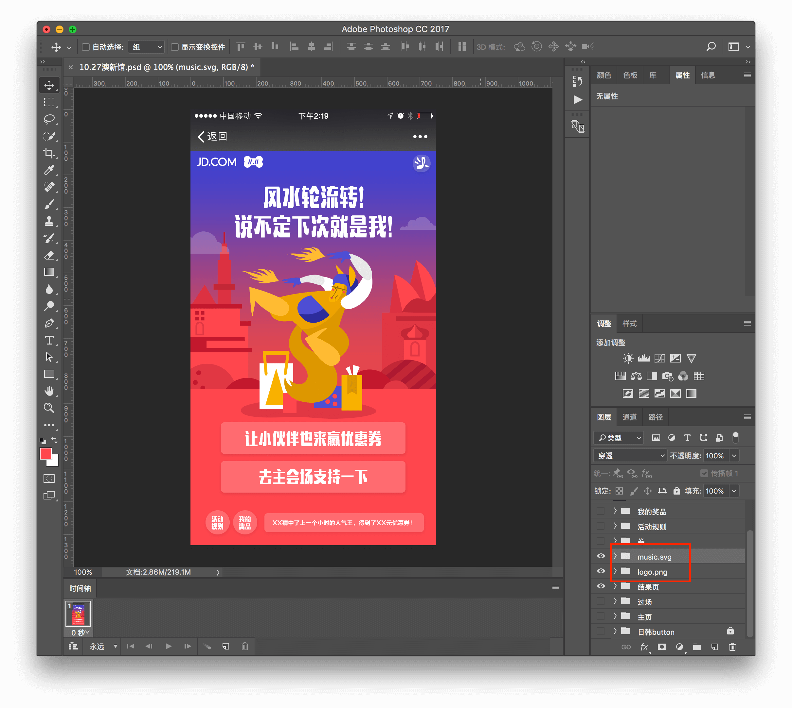
资源生成器默认会在 PSD 的同一层目录下创建 assets 文件夹，如图：
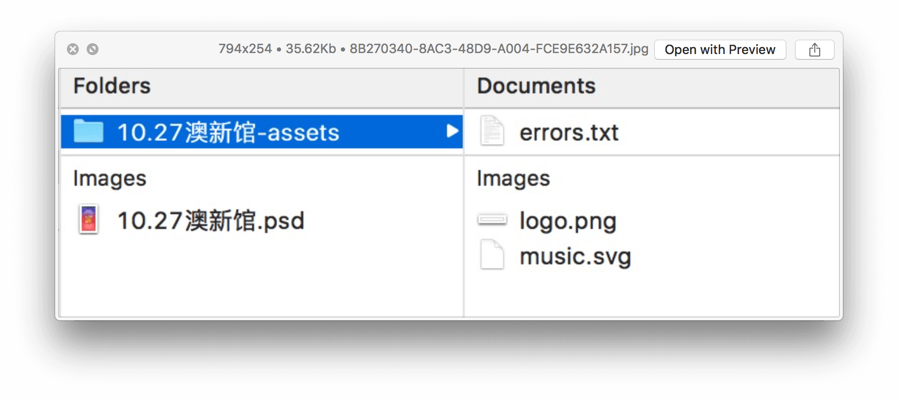
经过以上步骤，切图工作就完成了！切图只需要简单的三步：
- 打开 PSD 文件
- 打开 「生成 > 图像资源」
- 更改图层或图层组的文件名
Extract Assets 进阶
- 从一个图层或图层组中生成多个资源，请用半角逗号分隔该图层或图层组的名称
music.png, music.jpg, music_on.png
- 图像资源保存到子文件夹中
子文件夹/music.png
- 指定图像品质和大小参数
默认情况下， JPEG 资源会以 90% 品质生成， PNG 资源会以 32 位图像生成， GIF 资源则会以基本 Alpha 透明度生成
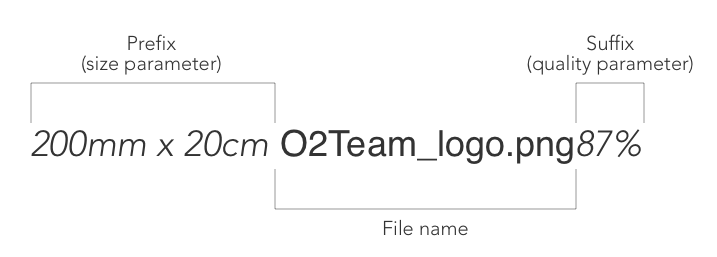
我们可以通过以下办法设置 JPEG 资源的参数：
- 添加所需的输出品质作为资源名称的后缀：jpg(1-10) 或者 jpg(1-100%)，例如：
music.jpg5
music.jpg50%
- 添加所需的输出图片大小（相对大小或者支持的单位：px, in, cm 和 mm）作为该资源名称前缀。Photoshop 会相应的缩放图像，例如：
200% music.png
240x300 music.png
注意：前缀和资源名称之间要添加一个空格字符
- 为资源指定默认位置
可以为生成的资源指定文件的默认位置，例如想将图层导出到 hi-res/ （存放二倍图，并加上 @2x 的后缀），lo-res/ 存放缩小 50% 的图标，可进行如下配置：
A. 创建空图层
B. 更改空图层的名称为 default hi-res/@2x + 50% lo-res/
方法2 - Export Artboards, Layers, and more
Photoshop CC 2015 版本之后添加了 Artboards 功能，有点类似 Sketch 里面的 Artboards。具体使用方法类似 Sketch 的 Export 功能，右键点击所需要导出的图层或图层组，点击弹出菜单中的 Export As 或 导出为 即可。
方法3 - PS 动作切图
细心的同学可能会发现，用 Extract Assets 切图存在一个问题，它只能切画布范围内的资源，超出画布的部分会直接被裁减掉，如下图：
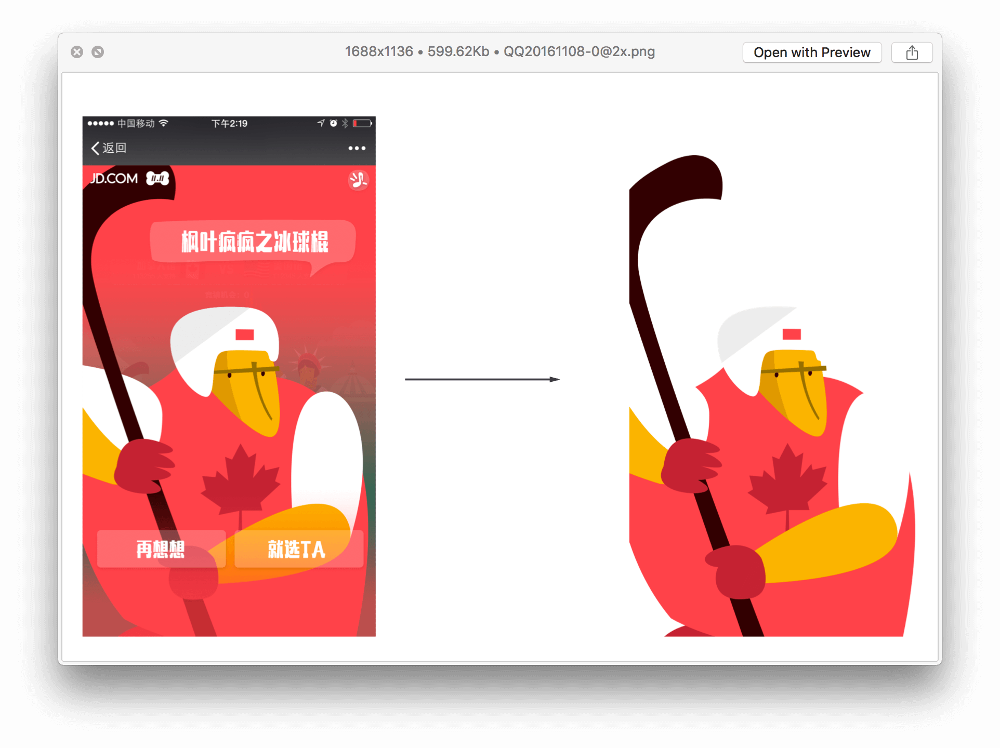
如果想切完整的图片该怎么办？建议用原始的「导出图层」的方式来切图，步骤如下：
- 右键点击图层或图层组
- 选择转换为智能对象
- 编辑内容
- 导出图片
为了避免重复劳动，我们可以用 PS 录制一个切图的动作，如图：
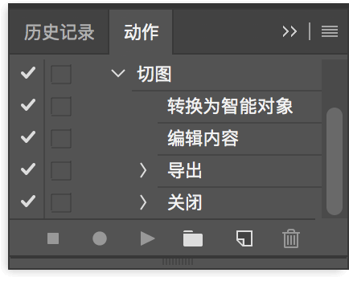
顺利的话，我们通过 PS 的动作切图，可以得到如下结果：
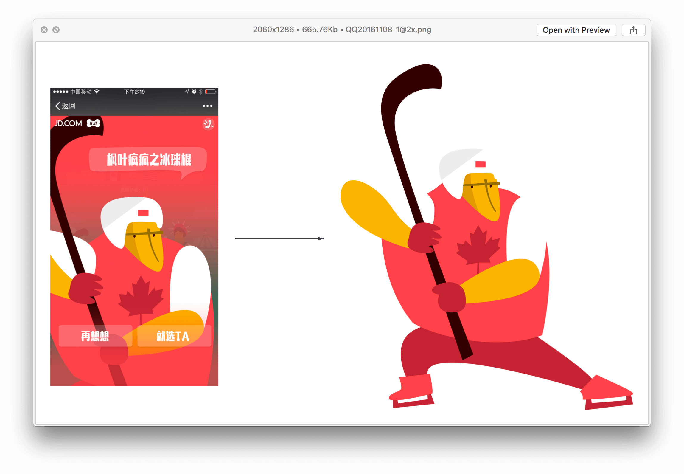
步骤4 - 润色
编写 CSS 是前端开发中，比较愉快的一步。在此过程中，你可以一步步见证代码神奇的力量。编写可用的 CSS 比较容易，但是要维护它却不简单。
CSS 是一种定义样式结构，被用于描述网页上信息的排版方式的语言。由于其声明属性的方式不具备编程语言流程性控制的特点，而且自身「层叠」的特性，难以写出低耦合度的代码。不好好组织，容易造成不同地方的 class 相互影响，引起样式冲突等问题。所以 CSS 命名是样式代码组织中最重要的一环。
BEM
在各类 CSS 命名规范中，BEM 命名规范被更多人所接受。
BEM 是一种基于组件的命名方法，它的基本思想是将用户界面划分成独立的模块，即使是复杂的用户界面，也能让开发过程变得简单、快速。并且可以在一定程度上提高代码的可复用性，而不用纯粹的复制粘贴。
BEM 的意思就模块（Block）、元素（Element）、修饰符（Modifier），使用这种命名方式可以让 CSS 的类名变得有实际意义且能自我解释，具有更高的开发友好性。
Block - 模块，名字的单词之间用 `-` 符号连接
Element - 元素，模块中的子元素，用 `__` 符号连接
Modifier - 修饰符，表示父元素或子元素的其他形态，用 `--` 符号连接
在没用 BEM 之前，我们可能会这样组织 CSS 类名：
<!-- S Search Bar 模块 -->
<div class="search-bar">
<input class="input">
<!-- / input 输入框 -->
<button class="btn">
<!-- / button 搜索按钮 -->
</div>
<!-- E Search Bar 模块 -->
上述写法虽然也给 class 赋予了一定的语义，但容易产生样式冲突的情况。
用 BEM 命名重写之后：
<!-- S Search Bar 模块 -->
<div class="search-bar">
<input class="search-form__input"/>
<!-- / input 输入框子元素 -->
<button class="search-form__button"></button>
<!-- / button 搜索按钮子元素 -->
</div>
<!-- E Search Bar 模块 -->
这样命名的好处是，模块语义化了，便于后期的维护，而且减少了 CSS 样式的层层嵌套，提升了网页的渲染效率。
通常在开发中使用 BEM 命名方法，会搭配 CSS 的预处理语言，如 SCSS 等。这可以一定程度上解决手写冗长命名的繁琐。
// 以下是 SCSS 代码
.search-bar {
&__input { ... }
&__button { ... }
}
将 BEM 用于中大型项目之后，我们会发现，当嵌套的层级越多时，类名也会越长，这给编写 HTML 代码带来了一些麻烦，同时也增加了 HTML 的文件大小。
那么问题来了，如何解决 BEM 命名冗长的问题？
姓氏命名法
为了进一步简化 CSS 的命名，我们凹凸实验室团队推广的 CSS 命名规范并不严格遵循 BEM 规范，不强制使用两个下划线「_ _ 」来分隔 B 和 E，而 E 和 M 之间也不一定要用两个中划线做分隔「- -」。
如：
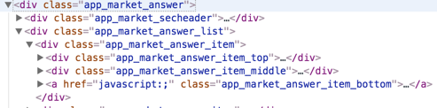
老师，简化版的 BEM 好像也没有解决命名冗长的问题呀？
确实，如果按照这种继承的写法，再结合「给小孩取名」的生活场景，会出现下面的情况：
有位同学的名字叫「李小璐」，他的儿子名字叫「李小璐乃亮」，他的孙子叫「李小璐乃亮皮几万」。。。
而事实上，他的孩子只需要保留「李」姓就可以了，名字是可以随便取的。
所以在纠结怎么给一个元素做 CSS 命名的时候，联想一下我们身边的姓名是怎么起的吧。我们凹凸实验室在业务中推广使用的「姓氏命名法」也因此而诞生。
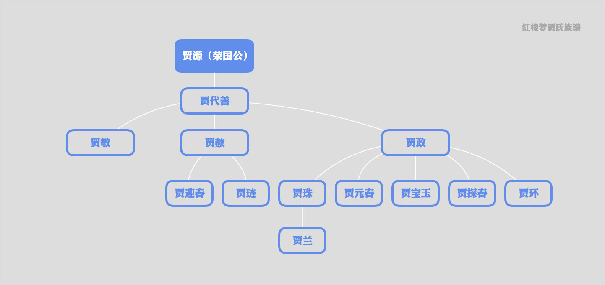
如果要关联上 BEM 命名方法，姓氏命名法中的 Block 就是「姓」，Element 就是「名字」，而 Modifier 就表示这个人的某种状态，例如：「范冰冰 - - 很美」。
如何优化？
对于上面 app_market_answer 的案例，我们可以确定模块的姓氏是「app_market_answer」，名字随意取的话，我们可以尝试如下优化：
<div class="app_market_answer">
<div class="app_market_secheader"></div>
<div class="app_market_answer_list">
<div class="app_market_answer_item">
<div class="app_market_answer_itop"></div>
<div class="app_market_answer_imid"></div>
<a href="javascript:;" class="app_market_answer_ibtn">去围观</a>
</div>
</div>
</div>
我们将 app_market_answer_item_top 改成了 app_market_answer_itop ，将 app_market_answer_item_middle 改成了 app_market_answer_imid ，只保留了「姓」。
如何进一步优化？
姓氏可以进一步简化，例如 app_market 可以看成是「复姓」，我们有时候为了书写便利，可以将两个单词的首字母结合在一起形成一个新的「单姓」，如 am 。追求便利的副作用之一是牺牲了代码的可读性。如果你做的项目或页面没有太大的二次维护或者交叉维护的可能性，推荐做此简化。
对于上面 app_market_answer 的案例，我们可以进一步优化成：
<!-- am = app_market -->
<div class="am_answer">
<div class="am_secheader"></div>
<div class="am_answer_list">
<div class="am_answer_item">
<div class="am_answer_itop"></div>
<div class="am_answer_imid"></div>
<a href="javascript:;" class="am_answer_ibtn">去围观</a>
</div>
</div>
</div>
小结
- ClassName 的命名应该尽量精短、明确，以英文单词命名，且全部字母为小写，避免意义不明的缩写
- 单词之间统一使用下划线
_或-连接 - 学习 BEM 的思想，参考使用姓氏命名法规范
- 定义样式模块，提高代码的可复用性
步骤5 - 兼容性测试
兼容性测试是网页开发中必不可少的一步，我们主要关注两点：
- 页面在各个浏览器中，以及不同分辨率下是否能正常显示（HTML / CSS 兼容性）
- 网页的功能是否能在各个浏览器中正常使用（JavaScript 兼容性）
「IE 虐我千百遍，我待 IE 如初恋」，这是圈内流传比较广的一句话，可见要做好网页的兼容性是件很不容易的事情。除了 IE 上有比较多的兼容性问题，移动端上的 Android 低版本浏览器也会有较多的问题。
所以在开发之初，我们要大致了解网站最终的用户群体有哪些，他们会使用怎样的设备，会用什么浏览器访问我们的网站？以此来决定我们是否要保持对低端浏览器的兼容性。
兼容性的基本原则是：
渐进增强与平稳退化。
在低端浏览器能够保持可用性和可访问性，然后再渐进增强，逐步增加功能及优化用户体验。
如果遇到兼容性问题，可以按如下步骤处理：
- 确认触发的场景：什么浏览器，什么版本，什么情况下触发的问题，做到稳定复现。
- 找出问题原因：是什么问题导致的，具体表现如何？
- 确定解决办法：参考现成的解决方案，如哪些属性不能使用以及相应的 Hack 处理
- 收集兼容性处理方法，积累成文档
小结
本小节通过「5 个基础页面开发的步骤」来阐述如何将一个设计稿案例转换成为网页，并给大家介绍了具有凹凸实验室特色的 CSS 样式命名方法：「姓氏命名法」。
掌握了「基础页面开发」，我们就拥有了「将设计稿变成保真网页」的能力，这就犹如学一门武功时迈出了第一步，有了良好的脉络根基，才可以继续学习更高级的招式技能。